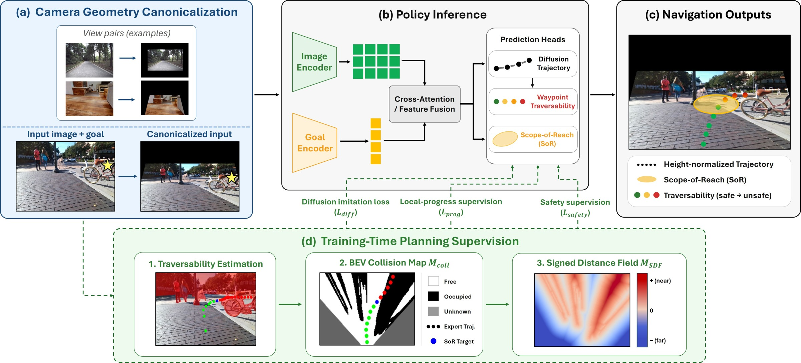
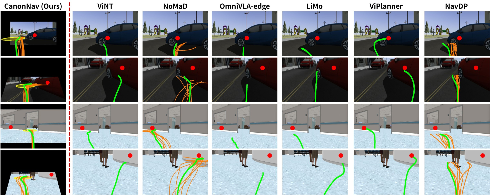

Abstract
While visual navigation has advanced through imitation learning from cross-platform demonstrations, fully leveraging such data remains challenging. First, directly learning from image-trajectory pairs entangles navigation behavior with platform-dependent camera geometry. This hinders consistent learning by forcing the policy to implicitly infer camera geometry from visual observations, an inherently ill-posed problem. Second, imitation learning from demonstrated trajectories captures the expert's chosen motion but leaves the intermediate decisions underlying that motion implicit. To address these issues, we propose CanonNav, a visual navigation framework that disentangles navigation behavior from camera geometry and incorporates complementary planning supervision into learning from cross-platform demonstrations. CanonNav introduces camera geometry canonicalization, which transforms visual observations and trajectories into a camera-consistent representation space. Building on this representation, we derive safety and local-progress supervision using pseudo-labels from an offline traversability estimator. Safety supervision penalizes unsafe trajectories, while local-progress supervision guides where the robot should advance. Experiments across diverse camera configurations and environments show that, despite using only RGB at inference, CanonNav consistently outperforms RGB-based baselines and even surpasses RGB-D-based methods in challenging scenarios.
Method

Results
Simulation Experiments

| Method | Input | CitySim (Outdoor) | AWS Hospital (Indoor) | ||||||||||
|---|---|---|---|---|---|---|---|---|---|---|---|---|---|
| 6 m | 12 m | 20 m | 6 m | 9 m | 12 m | ||||||||
| SR ↑ | Coll. ↓ | SR ↑ | Coll. ↓ | SR ↑ | Coll. ↓ | SR ↑ | Coll. ↓ | SR ↑ | Coll. ↓ | SR ↑ | Coll. ↓ | ||
| ViNT | RGB | 93.8 | 0.69 | 63.0 | 4.27 | 18.6 | 8.03 | 62.1 | 9.23 | 38.8 | 13.07 | 30.0 | 13.10 |
| NoMaD | RGB | 98.0 | 0.43 | 61.6 | 4.29 | 24.5 | 7.00 | 65.6 | 8.15 | 40.2 | 12.22 | 29.8 | 13.30 |
| OmniVLA-edge | RGB | 89.4 | 0.76 | 61.4 | 2.87 | 28.5 | 4.26 | 72.2 | 6.11 | 41.7 | 10.98 | 31.1 | 11.68 |
| LiMo | RGB | 99.1 | 0.26 | 79.6 | 2.16 | 48.3 | 4.25 | 81.0 | 4.17 | 54.3 | 8.03 | 39.7 | 9.92 |
| ViPlanner | RGB-D | 81.6 | 0.61 | 62.9 | 3.00 | 39.3 | 4.87 | 86.6 | 2.09 | 69.3 | 4.23 | 52.2 | 6.04 |
| NavDP | RGB-D | 99.7 | 0.07 | 93.7 | 0.54 | 71.2 | 2.21 | 98.3 | 0.53 | 93.1 | 1.22 | 82.9 | 1.91 |
| CanonNav (Ours) | RGB | 99.4 | 0.20 | 94.1 | 0.53 | 86.4 | 0.89 | 97.1 | 1.26 | 92.2 | 1.77 | 85.5 | 2.37 |
Simulation results averaged over 18 camera configurations, for each subgoal interval. SR: subgoal success rate (%); Coll.: collisions per 100 m traveled. Best results in bold, second-best underlined. From Table 1 of the paper.
Real-world Experiments
BibTeX
@article{kim2026canonnav,
title = {CanonNav: Disentangling Navigation Behavior from Camera Geometry in Cross-Platform Visual Navigation},
author = {Kim, Dong-Wook and Hwang, Ji-Hoon and Son, E-In and Oh, Mintaek and Seo, Seung-Woo},
journal = {arXiv preprint arXiv:2608.30242},
year = {2026}
}